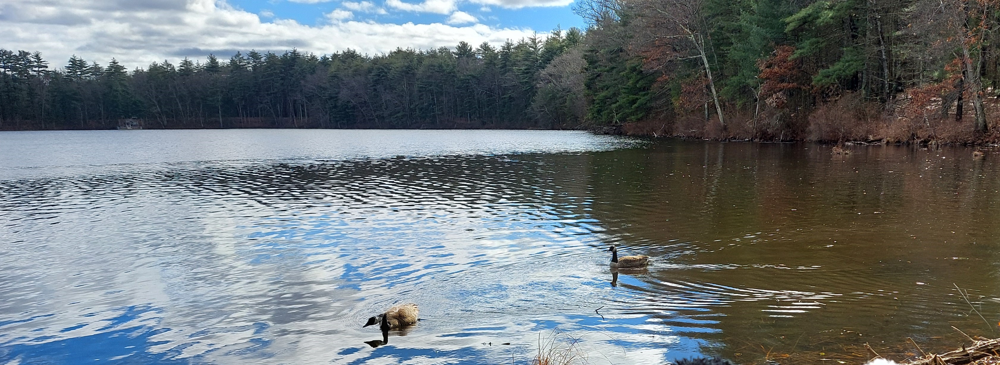

A peaceful wooded land surrounding Puffer Pond, the Assabet River National Wildlife Refuges encompasses over 2300 acres,
and is located in the towns of Hudson, Maynard, Stow, and Sudbury, Massachussetts.
Beautiful scenery, abundant wildlife, and 15 miles of gentle trails
make this a delightful destination for visitors to pursue a variety of recreational activities.
The refuge is open from sunrise to sunet year round.
The main entrance to the Refuge is located at 680 Huson Road in Sudbury, MA.
There is a parking area at the entrance, with two additional parking lots along Winterberry Way inside the Refuge.
Additional parking areas are located at the end of White Pond Rd in Stow and at the end of Old Marlboro Rd in Maynard.
The Visitor Center and Restrooms at the Winterberry Way parking area are currently closed to the public, though portable toilets are generally available.
Parking for visitors with mobility challenges can be found at the parking lots on Hudson Rd, Winterberry Way, and White Pond Rd.
Additionally, there is a parking area exclusively for accessible fishing access near the Fishing Ramp on Winterberry Way.
A paved, accessible trail parallels Winterberry way from the refuge entrance to the parking lot at the end of the paved portion of the road.
The Fishing Dock on Winterberry Way has an accessible ramp.